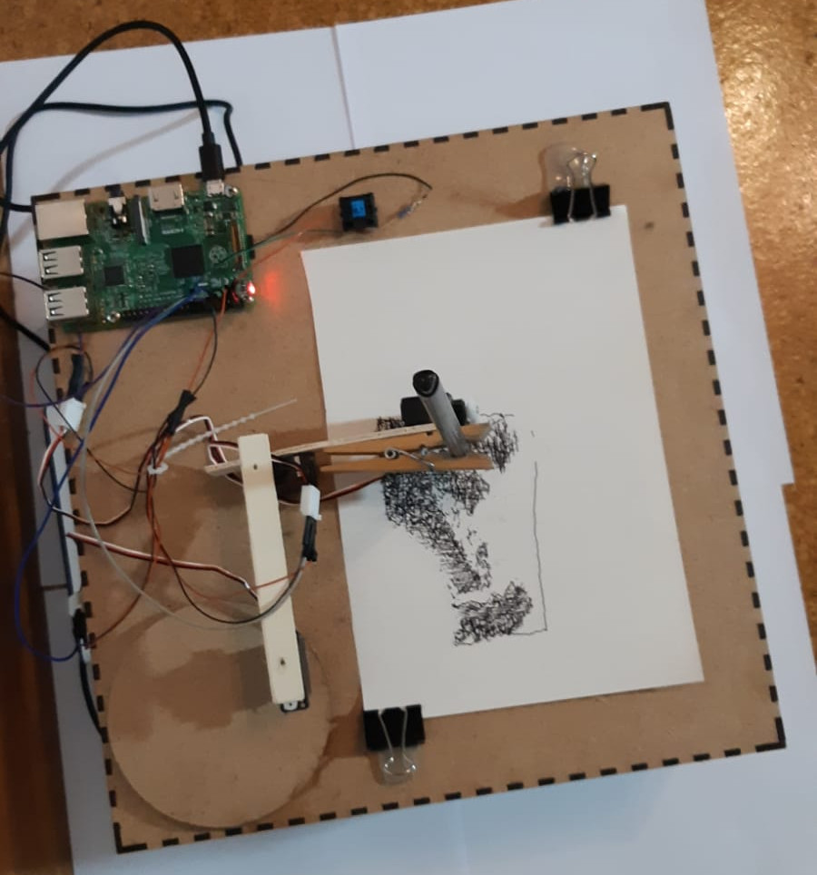
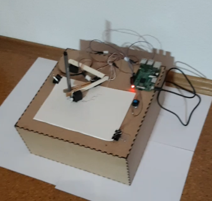

Zeichenplotter
← Zurück zum Lebenslauf
In Teamarbeit mit einer Freundin habe ich einen Zeichenplotter nach dieser Anleitung gebaut.
|  |
 |
Der Plotter wird von einem Raspberry Pi 2B gesteuert. Der Zeichenarm läuft über zwei Servos SM-S2309S gesteuert. Von uns wurde die Möglichkeit, ohne über SSH-Verbindung einfach über Knopfdruck den Plotter zurückzusetzen, beziehungsweise das Plotten zu starten, zu dem Tutorial hinzugefügt.